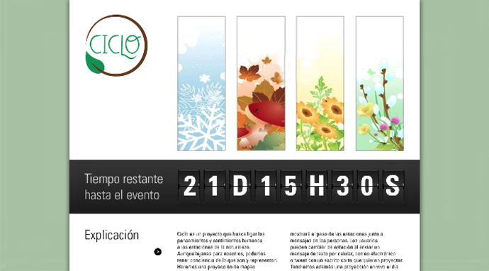
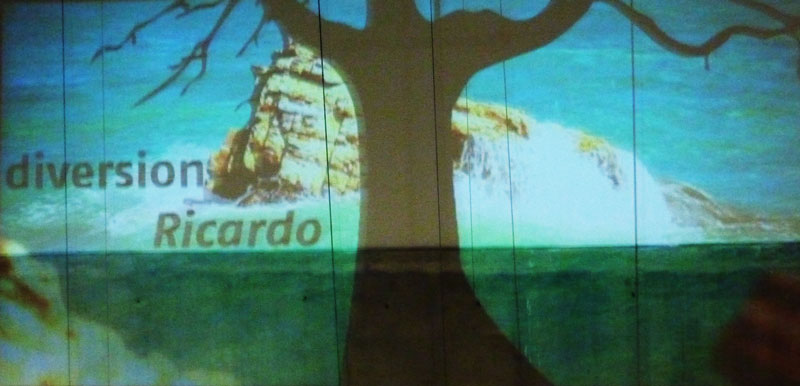
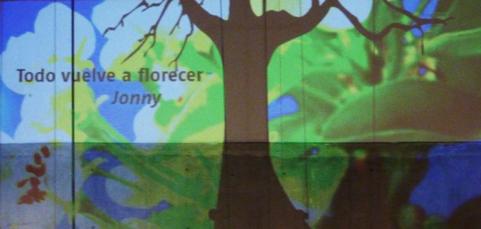

--- Experimentos ---
Ciclo
Ciclo trata de ligar los pensamientos y sentimientos humanos a las estaciones de la naturaleza, aunque lejanas para nosotros que estamos en Colombia, podemos tener conciencia de lo que son y representan. El usuario entonces podía enviar un mensaje con una estación determinada y estos su vez eran proyectados sobre un edificio al que varias personas eran testigas.
El proyecto alcanzó la etapa de Mago de Oz pero alcanzamos a probarlo con usuarios reales y la experiencia tuvo una muy buena aceptación.
Equipo:
- Stephanie Weber
- Luis Alejandro Echandía
- Jacobo Moreno Quiroga
- Christian José Unigarro

Trabajo en Modul 8

Página web Ciclo
Página web Ciclo

Adecuación del lugar

Proyección de mensaje
Proyección de mensaje

Proyección de mensaje
Proyección de mensaje

Proyección de mensaje
Para acceder al abstrac del proyecto haz clic aquí.